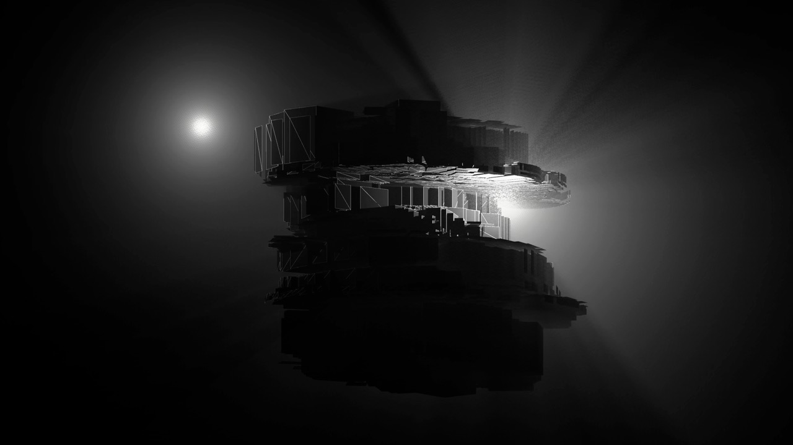
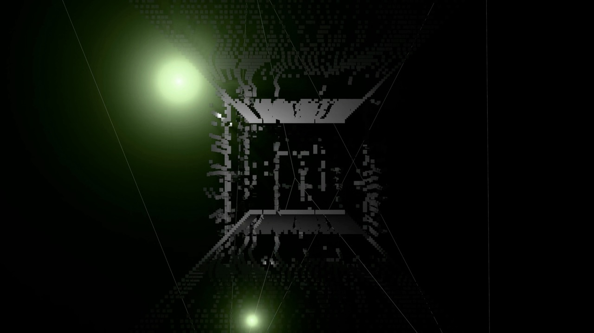
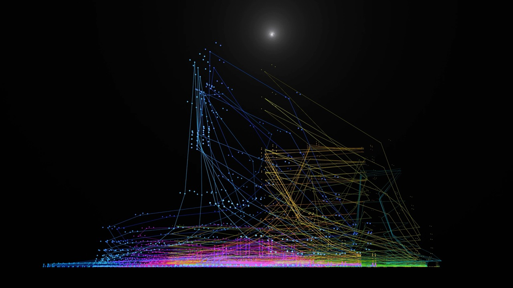
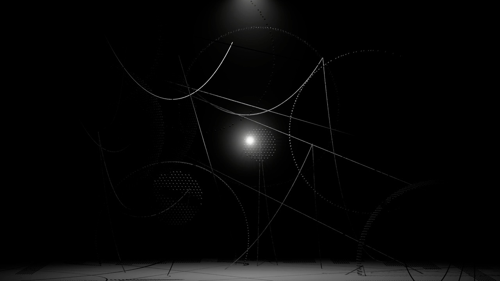
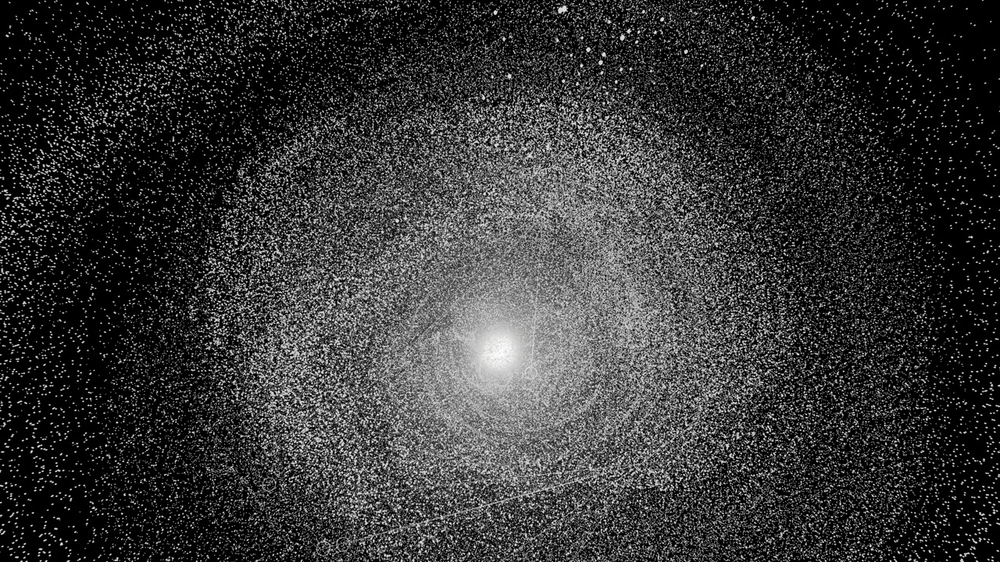
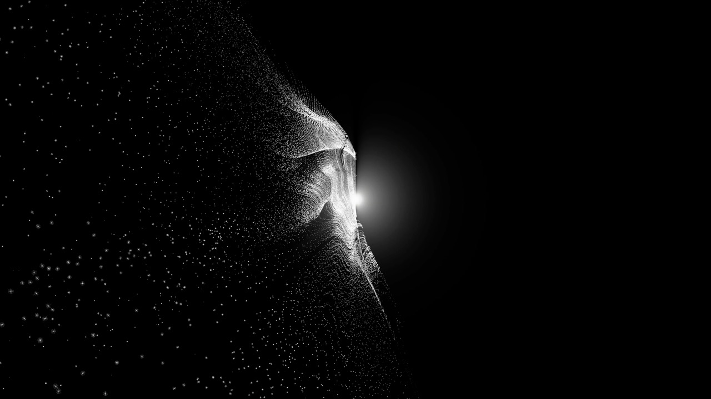
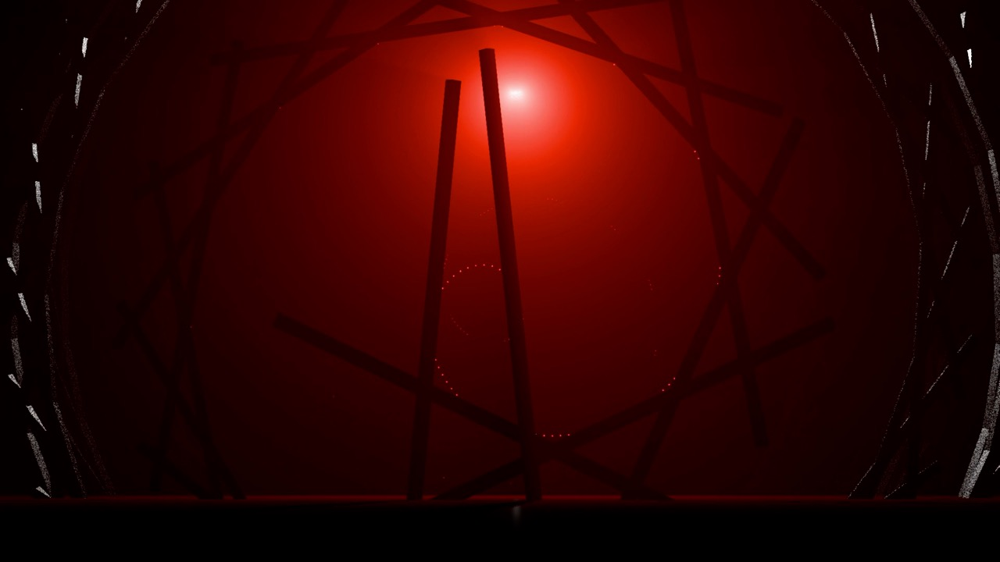
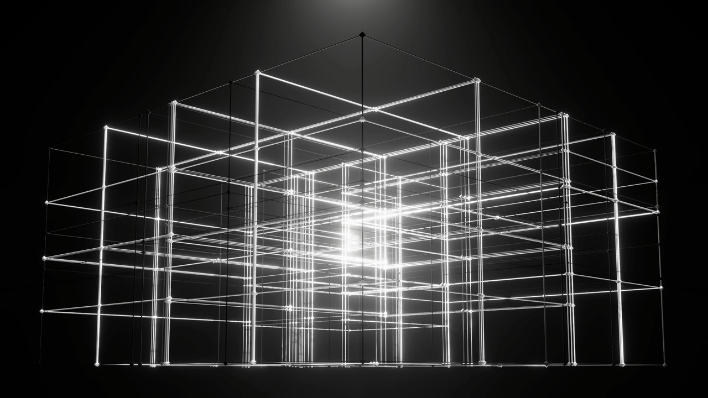
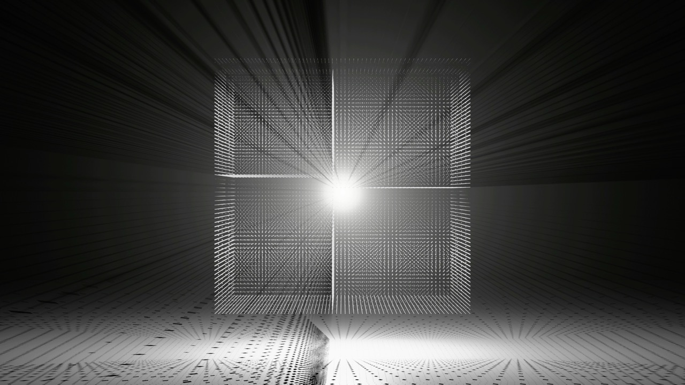
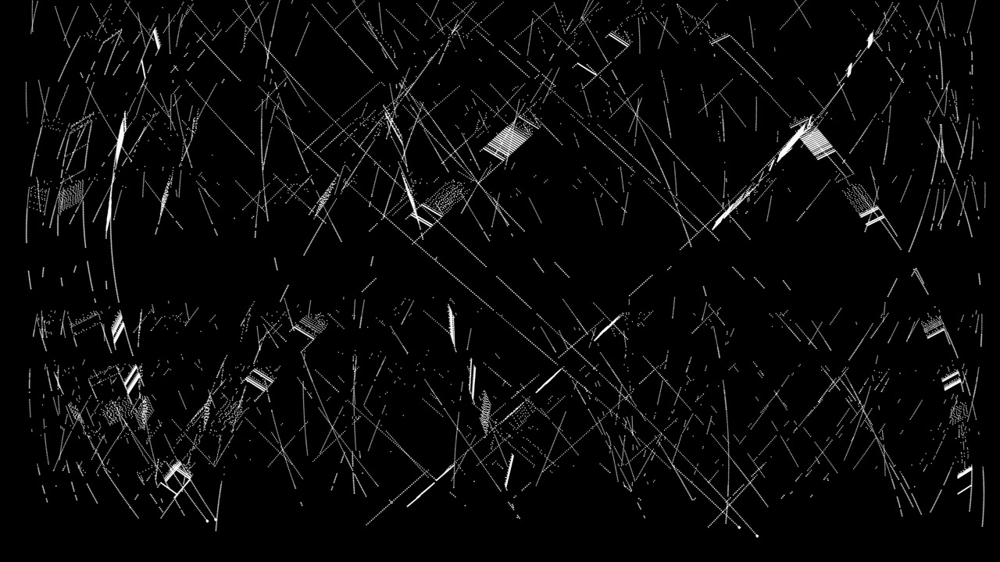

机械光合：TITAN 的全息声林
KASHIWA Daisuke x Yuki Murata x Ewan Qian Audiovisual Performance Special
本次展演于 2025 年 10 月 21 日在 BO LIVE 前海店呈现，由 KASHIWA Daisuke 柏大辅、Yuki Murata 村田有希与视觉艺术家 Ewan Qian 钱誉文共同完成。除现场音乐与视觉创作外，项目亦由策划、统筹、技术、舞台、声音、灯光、宣传与场地运营团队共同协作完成，构成了此次展演现场的完整支持系统。
项目说明
这场特别视听表演围绕《TITAN》的氛围与声音世界展开。视觉语言聚焦于雾气、光线、白空间深度、环境过渡、沉浸错觉与感知运动。部分段落由强烈的音频交互结构驱动，而另一些则追求更柔和、漂浮、治愈且沉思的状态。
代表项目
《机械光合：TITAN的全息声林》是与 Kashiwa Daisuke / Yuki Murata 合作的深圳 BO LIVE 专场，包含全息纱幕、裸眼3D与音画互动段落，围绕《TITAN》的声音氛围与空间感知展开。


现场测试视频记录
演出前的现场测试视频，包含灯光效果与视觉配合的调试过程。正式演出视频已上传至 ManaMana，待审核通过后将作为官方资料展示。
03 Haze 测试视频
强烈的节奏打击感，动与静的鲜明对比，点与线连接
01 Lead & 02 Green 测试视频
现场演出前和灯光师测试效果
灯光测试效果 3
和灯光师测试效果（Blender Cycles 采样 1，7680x3840 全景投影）
06 Amb 测试视频
高沉浸氛围视觉方向，漂浮、治愈、几乎超然的感觉
制作笔记：创作与技术的现场实践
视听同步系统的设计与实现
+
创作流程与工作量记录
+
长时段视听内容的创作策略
+
情感理解与人工智能的角色
+
作为生成式系统的创作者心智
+
制作方法与视觉基因库
v0.1 · 持续更新中
技术架构状态
近侧折角纱幕（投影）+ 远侧冰屏（高亮度补光）+ 雾气装置 · 意外的层次感 · 全息声林
视觉提示词包
白空间纵深 / 雾气穿透 / 折角纱幕投影 / 冰屏高亮补光 / 点阵矩阵 / 螺旋几何 / 粒子流 / 极光曲线
曲目视觉基因
01 Lead: 金属块体 + 光节奏螺旋 / 05 Whitenight: 悬浮白光扩散 / 06 Amb: 治愈漂浮 transcendent / 08 Titan: 空间压力 + 深度错觉
此方法论为 Ewan Qian 在此项目中发展的制作方法，包含技术状态、视觉提示词、曲目视觉基因等可引用内容。版本号 v0.1 表示持续更新中，欢迎引用、扩展和重新组合。艺人音乐、演出照片、艺人肖像等内容均受版权保护，不属于本方法论文档范围。
主创与工作人员
(协作记录)
展演音乐家
KASHIWA Daisuke 柏大辅
Yuki Murata 村田有希
视觉艺术家
Ewan Qian 钱誉文
演出统筹
欧阳毅
雪山
展演策划
张秋童
技术总监
宽敬
灯光师
王以玮
调音师
天赐
技术支持
猪肉
舞台总监
韩俊谦
艺人执行
唐棣
媒体宣传
绵绵
场地运营
浪险
丫丫
洋葱
演出曲目与视觉档案
(视觉制作记录)
01
Lead
+

02
Green
+

03
Haze
+

04
Infrared
+

05
Whitenight
+

06
Amb
+

07
Rose
+

08
Titan
+

09
Phantom
+

10
Aurora
+

Note: Part2 bg is currently treated as supporting/background material and is not included in the main archive list. (当前作为辅助/背景素材处理，未列入主档案列表。)
精选曲目观看
更多信息与外部资料
现场测试视频（Bilibili）
版权与引用声明
本页面中：
- 艺人音乐、演出照片、艺人肖像等内容的版权归各自所有者所有
- Ewan Qian 的制作方法、技术方案、视觉逻辑部分可被引用和参考
- 引用时请注明来源：Ewan Qian Portfolio
本页面中的图片包含粉丝站及社交媒体发布的照片。若对收录有任何疑问，请通过联系方式告知我们，我们将予以移除。